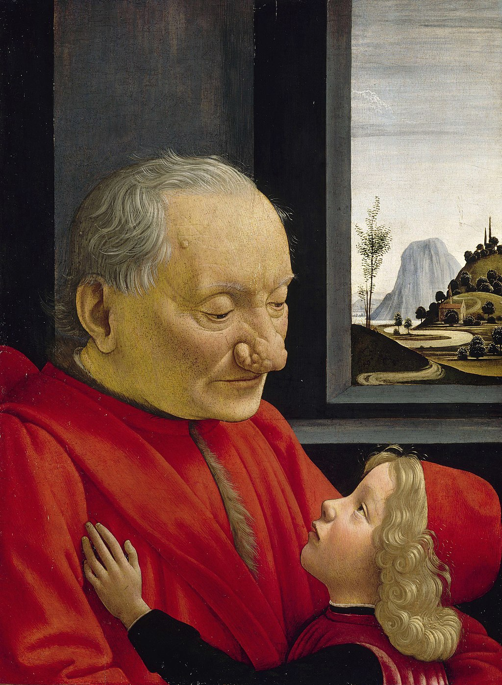

<head>
<meta charset="UTF-8" />
<meta name="keywords" content="drawing, painting" />
<meta name="description" content="drawings by Sunjy" />
<title>Sunjy</title>
<link rel="shortcut icon" type="image/x-icon" href="../../mImages/mCommon/favicon.ico" media="screen" />
<link rel="stylesheet" type="text/css" href="../../mCsses/mCommon/mCssA.css" />
<link rel="stylesheet" type="text/css" href="../../mCsses/mCommon/mCssB.css" />
<link rel="stylesheet" type="text/css" href="../../mCsses/mCommon/mCssC.css" />
<link rel="stylesheet" type="text/css" href="../../mCsses/mCommon/mCssD.css" />
<link rel="stylesheet" type="text/css" href="../../mCsses/mContent/mCssA.css" />
<link rel="stylesheet" type="text/css" href="../../mCsses/mContent/mCssB.css" />
<link rel="stylesheet" type="text/css" href="../../mCsses/mContent/mCssC.css" />
<link rel="stylesheet" type="text/css" href="../../mCsses/mContent/mCssD.css" />
</head>
<script type="text/javascript" src="../../mScripts/mContent/mContentAA.js" /></script>
<script type="text/javascript" src="../../mScripts/mContent/mContentAB.js" /></script>
<script type="text/javascript" src="../../mScripts/mContent/mContentAC.js" /></script>
<script type="text/javascript" src="../../mScripts/mContent/mContentAD.js" /></script>
<script type="text/javascript"></script> 
<script type="text/javascript">
document.write('<div class="mImgAbsolute"></div>');
/*
document.write('<p class="mFontSizeBColor" />From a white paper...</p>');
document.write('<table class="center"><tr><td>');
document.write('');
document.write('</td></tr></table>');
*/
</script>


<script type="text/javascript">
document.write('<p class="mFontSizeBColor" />An Old Man and his Grandson</p>');
document.write('<p class="mFontSizeSColor" />“An Old Man and his Grandson” by Domenico Ghirlandaio portrays an older man in a red robe, embracing a young child who is also wearing red.<br><br>They sit in a room with a window through which can be seen as a landscape consisting of a sculptured terrain and winding roads typical of many of Ghirlandaio’s background depictions.<br><br>Although the man’s fur-lined robe and the boy’s elegant doublet and cap indicate an autocratic or wealthy family, their identities are a mystery.<br><br>The identity of the sitters is no longer known. The poignancy of the image is dramatized by the contrast between the man’s weathered and wise face, and the child’s delicate profile.<br><br>It is one of Ghirlandaio’s best-known works and is considered notable for its emotional poignancy and realism.<br><br>An extraordinary feature of the painting is the deformity of the man’s nose, evidence of rhinophyma.<br><br>Ghirlandaio has presented the portrait in a naturalistic and sympathetic fashion, at variance with the practice of the era of assessing a person’s character from their outer appearance.<br><br>Rather than implying a defect of character, Ghirlandaio invites appreciation of the intimacy between the older man and a child.<br><br>The relationship between the two is highlighted by the placement of the child’s hand on the man’s chest, and the man’s expression.<br><br>This show of affection endows the picture with emotional qualities beyond those expected from a traditional dynastic portrait.<br><br>While the composition was influenced by the portraiture from the Netherlands, by the mid-15th century the theme of a portrait in an interior with a landscape in the distance, was common in Italy.<br></p>');
document.write('<table class="center" /><tr><td>');
document.write('<br>They sit in a room with a window through which can be seen as a landscape consisting of a sculptured terrain and winding roads typical of many of Ghirlandaio’s background depictions.<br><br>Although the man’s fur-lined robe and the boy’s elegant doublet and cap indicate an autocratic or wealthy family, their identities are a mystery.<br><br>The identity of the sitters is no longer known. The poignancy of the image is dramatized by the contrast between the man’s weathered and wise face, and the child’s delicate profile.<br><br>It is one of Ghirlandaio’s best-known works and is considered notable for its emotional poignancy and realism.<br><br>An extraordinary feature of the painting is the deformity of the man’s nose, evidence of rhinophyma.<br><br>Ghirlandaio has presented the portrait in a naturalistic and sympathetic fashion, at variance with the practice of the era of assessing a person’s character from their outer appearance.<br><br>Rather than implying a defect of character, Ghirlandaio invites appreciation of the intimacy between the older man and a child.<br><br>The relationship between the two is highlighted by the placement of the child’s hand on the man’s chest, and the man’s expression.<br><br>This show of affection endows the picture with emotional qualities beyond those expected from a traditional dynastic portrait.<br><br>While the composition was influenced by the portraiture from the Netherlands, by the mid-15th century the theme of a portrait in an interior with a landscape in the distance, was common in Italy.<br>" />');
document.write('</td></tr></table>');
</script>


